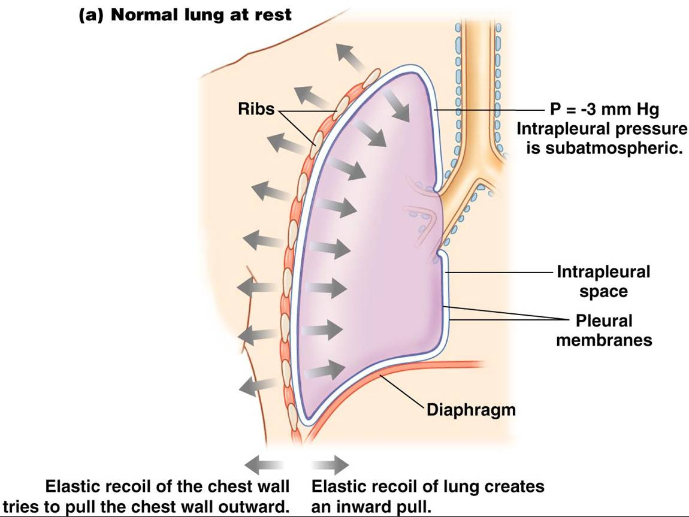

- Natural Properties of Lungs & Chest Wall
- The lung can be viewed as a passive, elastic container.
- The “pleural space” contains only a film of fluid, so lungs normally remain in contact with the chest walls.
- The lung tends to recoil inward and the chest wall outward
- *These recoil forces in opposite directions create a negative (sub-atmospheric) pleural pressure: -3 to -4 mm Hg relative to atmospheric and alveolar pressures.
- -> Lungs expand and contract along with the thoracic cavity.
- What happens if the pleural space is disrupted by air or fluid?
